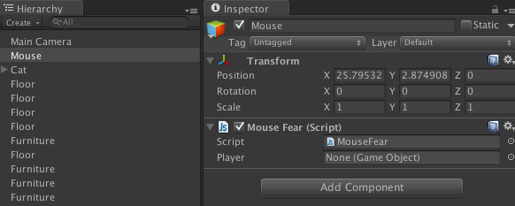
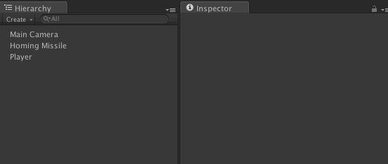

Most Unity specific code breaks down to three steps:
"Boss Monster""Boss Monster" > BossAI.cs"Boss Monster" > BossAI.cs > SpitFireAt(Player);There are many ways to do each of the three steps, and you can mix and match them as you need.
By leaving out a GameObject, you are refering to the GameObject the component is attached to
transform.Translate(0, 10, 0);You can store a reference to a GameObject in a variable and use that.
You can drag GameObjects onto the variable in the editor.
public GameObject player;
void Update() {
player.
transform.
Rotate(0, 20, 0);
}You can use tags to organize your objects. Use GameObject.FindWithTag to find a GameObject with a particular tag, or GameObject.FindGameObjectsWithTag to find all GameObjects with a particular tag.
GameObject.FindWithTag("Player").
SendMessage("Jump");(NOT RECOMMENDED) Use GameObject.Find to search the scene for a GameObject with a particular name.
GameObject.Find("Asteroid").
transform.
Translate(0, 10, 0);NOTE: Unity adds "(Clone)" at the end of Instantiated GameObject names.
By leaving out a GameObject and a Component, you are referring to the very component you are scripting. You can access its methods and fields directly.
public float speed;
void Update() {
Move();
}
void Move() {
transform.
Translate(0, speed, 0);
}You can access any component on an object using the GetComponent method. This is how you will access your own components.
public GameObject submarine;
submarine.
GetComponent<Periscope>().
Raise();
// Component.GetComponent works too
submarine.
GetComponent<Periscope>().
GetComponent<NuclearReactor>().
TurnOff();
You can store a reference to a Component in a variable and use that.
You can drag GameObjects onto the variable in the editor. Unity will extract the Component for you.
public Transform playerPosition;
void Update() {
transform.
LookAt(playerPosition);
}You can access one of Unity's built in components using a shorthand syntax. All available components using this syntax are listed under 'Variables' on the Component reference page. NOTE: In Unity 5.0 or later, the only built-in shortcut is now transform (lowercase T). (Why?)
gameObject.
rigidbody.
AddForce(0, 20, 0);Get "public" data in another component.
public GameObject player;
Debug.Log(player.transform.
position.x);Edit "public" data stored in a component.
NOTE: For Vectors, you CANNOT change just one part (like "x") alone. See example below.
public GameObject player;
player.transform.
position = new Vector3(20,1,5);
// this will NOT work in C#
player.transform.
position.x = 20;
// this is annoying but it works
player.transform.
position += new Vector3(20,0,0);
You can call "public" methods exposed by the component.
public GameObject player;
player.transform.
Translate(20, 30, 10);(NOT RECOMMENDED) You can trigger a similarly named method on all components attached to a GameObject using SendMessage. This allows you to skip specifying a component.
GameObject.Find("Player").
SendMessage("Dance");